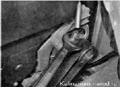

Ремень генератора - проверка состояния и регулировка натяженияДля выполнения работы можно снять правое переднее колесо либо установить автомобиль на смотровую канаву или эстакаду. Последовательность выполнения 1. Подготавливаем автомобиль к выполнению работы. 2. Снимаем правую часть брызговика двигателя. 3. Визуально проверяем состояние ремня привода генератора- Прикладываем усилие 98 Н (10 кгс) к ремню ровно посередине между шкивом генератора и шкивом коленчатого вала двигателя. При обнаружении на ремне трещин следов износа и других повреждений ремень следует заменить. Правильно отрегулированный ремень должен прогнуться на расстояние около 8 мм. Если прогиб ремня не соответствует норме, отрегулируйте натяжение ремня. Если трудно оценить усилие, создаваемое рукой, можно воспользоваться бытовым безменом с максимально допустимой нагрузкой 10 кг. 4. Для регулировки снимаем бачок стеклоомывателей. 5. Рожковым ключом на 19 мм отворачиваем контргайку натяжного механизма. Вращая регулировочную шпильку торцовым ключом на 8 мм, изменяем натяжение ремня привода генератора (по часовой стрелке увеличиваем натяжение ремня, а против часовой стрелки — уменьшаем). 
Чрезмерное натяжение ремня может привести к выходу из строя переднего подшипника генератора. 6. Проверяем натяжение ремня генератора (см. выше) и при необходимости повторяем регулировку. 7. Убедившись, что ремень натянут правильно, удерживая регулировочную шпильку, затягиваем контргайку. 8. Устанавливаем брызговик двигателя. |